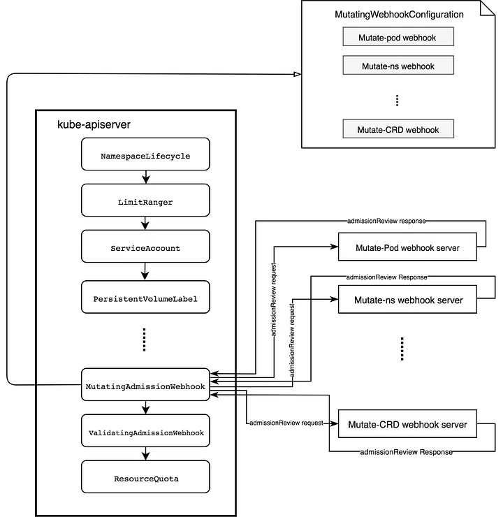

MutatingAdmissionWebhook 是如何工作的[1][chat] #
MutatingAdmissionWebhook拦截与MutatingWebhookConfiguration中定义的规则匹配的请求，然后将其发送到Webhook服务器进行处理，然后再持久化到etcd 中。 MutatingAdmissionWebhook通过向Webhook服务器发送admission请求来执行变更。Webhook服务器只是遵循Kubernetes的API 的普通HTTP服务器。
以下图示了MutatingAdmissionWebhook的工作原理:

MutatingAdmissionWebhook需要三个对象才能正常工作:
-
MutatingWebhookConfiguration
MutatingAdmissionWebhook需要在apiserver中注册，提供MutatingWebhookConfiguration。在注册过程中，MutatingAdmissionWebhook说明以下内容:- 如何连接到Webhook Admission服务器
- 如何验证Webhook Admission服务器
- Webhook Admission服务器的URL路径
- 定义了哪些资源和操作它处理的规则
- 如何处理来自Webhook Admission服务器的无法识别的错误
apiVersion: admissionregistration.k8s.io/v1beta1
kind: MutatingWebhookConfiguration
metadata:
name: sidecar-injector-webhook-cfg
labels:
app: sidecar-injector
webhooks:
- name: sidecar-injector.morven.me
clientConfig:
service:
name: sidecar-injector-webhook-svc #2
namespace: default
path: "/mutate"
caBundle: ${CA_BUNDLE}
rules:
- operations: [ "CREATE" ]
apiGroups: [""]
apiVersions: ["v1"]
resources: ["pods"]
namespaceSelector:
matchLabels:
sidecar-injector: enabled
-
MutatingAdmissionWebhook本身
MutatingAdmissionWebhook是一种插件式的Admission控制器，可以配置到apiserver中。MutatingAdmissionWebhook插件从MutatingWebhookConfiguration中获取感兴趣的Admission Webhooks列表。然后，MutatingAdmissionWebhook观察到对apiserver的请求，并拦截与admission webhook规则匹配的请求，并并行地调用它们。 -
Webhook Admission Server
Webhook Admission服务器只是一个符合Kubernetes API的普通HTTP服务器。对于每个API server的请求，MutatingAdmissionWebhook将admissionReview（用于参考的API）发送到相关的webhook admission服务器。webhook admission服务器会从admissionReview中收集信息，如object，oldobject和userInfo，然后返回一个admissionReview响应，其中包括填充了admission决策和可选的Patch以改变资源的AdmissionResponse。
服务部署 #
apiVersion: extensions/v1beta1
kind: Deployment
metadata:
name: sidecar-injector-webhook-deployment
labels:
app: sidecar-injector
spec:
replicas: 1
template:
metadata:
labels:
app: sidecar-injector
spec:
containers:
- name: sidecar-injector
image: morvencao/sidecar-injector:v1
imagePullPolicy: IfNotPresent
args:
- -sidecarCfgFile=/etc/webhook/config/sidecarconfig.yaml #1
- -tlsCertFile=/etc/webhook/certs/cert.pem
- -tlsKeyFile=/etc/webhook/certs/key.pem
- -alsologtostderr
- -v=4
- 2>&1
volumeMounts:
- name: webhook-certs
mountPath: /etc/webhook/certs
readOnly: true
- name: webhook-config
mountPath: /etc/webhook/config
volumes:
- name: webhook-certs
secret:
secretName: sidecar-injector-webhook-certs
- name: webhook-config
configMap:
name: sidecar-injector-webhook-configmap
apiVersion: v1
kind: ConfigMap
metadata:
name: sidecar-injector-webhook-configmap
data:
sidecarconfig.yaml: |
containers:
- name: sidecar-nginx
image: nginx:1.12.2
imagePullPolicy: IfNotPresent
ports:
- containerPort: 80
volumeMounts:
- name: nginx-conf
mountPath: /etc/nginx
volumes:
- name: nginx-conf
configMap:
name: nginx-configmap
apiVersion: v1
kind: Service
metadata:
name: sidecar-injector-webhook-svc #2
labels:
app: sidecar-injector
spec:
ports:
- port: 443
targetPort: 443
selector:
app: sidecar-injector